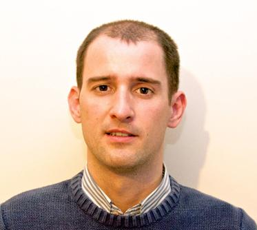
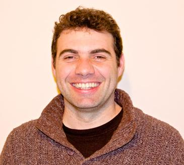

Gregorio Robles España
Profesor e investigador de la URJC Director del grupo

Pedro de las Heras España
Profesor e investigador de la URJC

Jesús M. González Barahona España
Profesor e investigador de la URJC

Jose Centeno España
Profesor e investigador de la URJC

Eva Castro España
Profesora e investigadora de la URJC

Jesús M. González Barahona España
Doctorando en la URJC Cofundador de programamos.es Profesor de Secundaria

Jesús Moreno España
Doctorando en la URJC
Cofundador de programamos.es y Profesor de Secundaria

Eva Hu Garres España
Técnico de apoyo